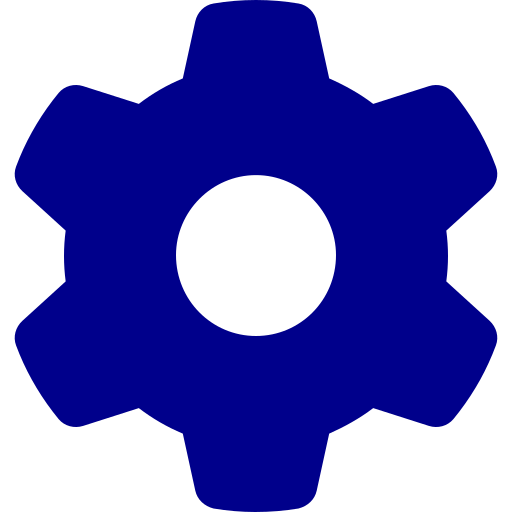
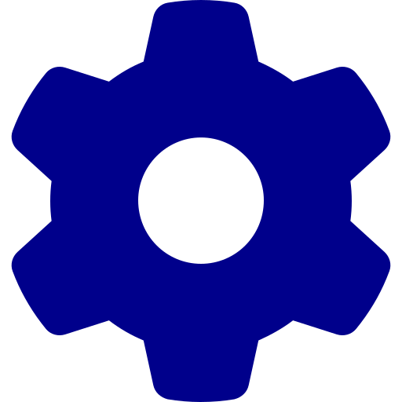
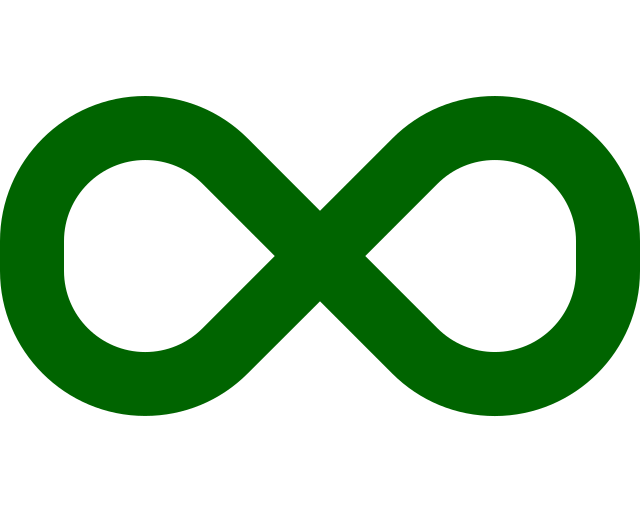

.angular
.idea
conf
dist
aws
build
docker
docs
node_modules
proxy-backend
src
.browserslistrc
.dockerignore
.editorconfig
.eslintrc.json
.gitignore
.prettierrc
angular.json
CHANGELOG.md
Dockerfile
docker-compose.yml
karma.conf.js
package.json
package-lock.json
README.md
tsconfig.app.json
tsconfig.json
tsconfig.spec.json
Jenkinsfile
launch.bat
site.ymlCI/CD, le divorce serait-il prononcé ?
Nos deux tourtereaux
L’origine

CI
Continuous Build
Continuous Integration
Bref…
CD
Delivery
Deployment
Development
Bref…
La rencontre…
Un avenir tout tracé !
Yann
Nicolas
Découvrons la suite de leur histoire
Les petits pipelines
La définition d’un pipeline
C’est un dessin…

… Et des personnes
Dis, comment on fait des pipelines ?
Event storming
Et voilà !
Petit pipeline deviendra grand …
1. Nicolas Boileau
Une révolution arrive ?
L’élément perturbateur
Tous l’admiraient
Gestion des sources
C’est le bordel

C’est le bordel
Fusionner les deux process
Comment aider notre petite famille ?
La thérapie de couple
DRY…
Exemple
Exemple
…mais pas trop !
Un couple SOLID ?
Une responsabilité unique
Exemple
Exemple
Rester ouvert…
Exemple
Liskov à la rescousse…
1. Barbara Liskov
Ségrégation d’interface
Exemple
Une inversion de dépendance ?
Exemple
Un peu de lacher prise ?
Exemple
Pouvoir debrayer !
Points d’inférence
Oups …
Le monde des Bisounours

KISS : Keep It Simple Stupid
Qui est ce thérapeute ?
Un plan à trois
L’arrivée…
La boucle est bouclée
L’émergence
Des accompagnateurs
Une question de communication

Bref…
Faisons le point
C’est l’heure du choix
 

Séparation des responsabilités
